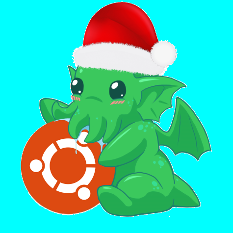
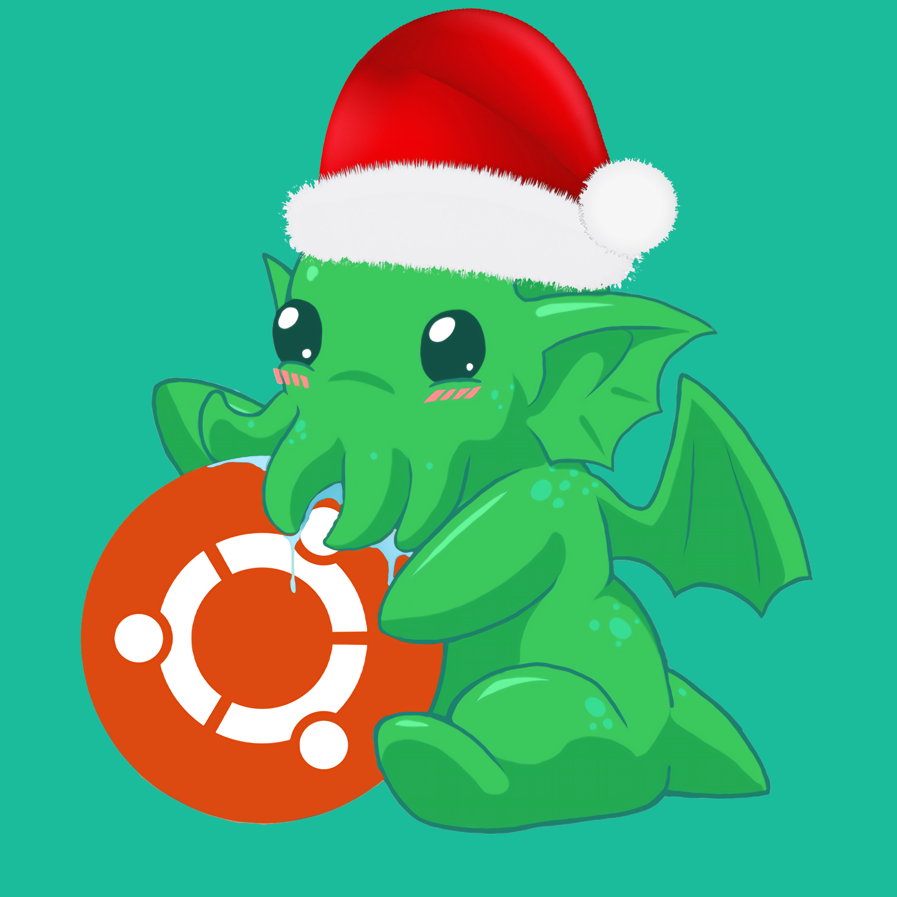
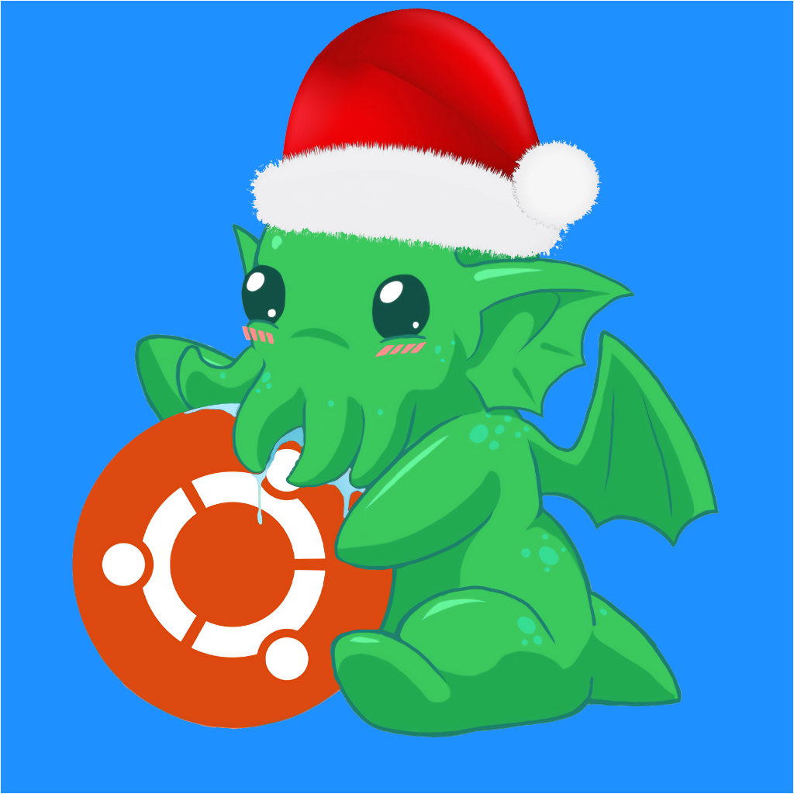
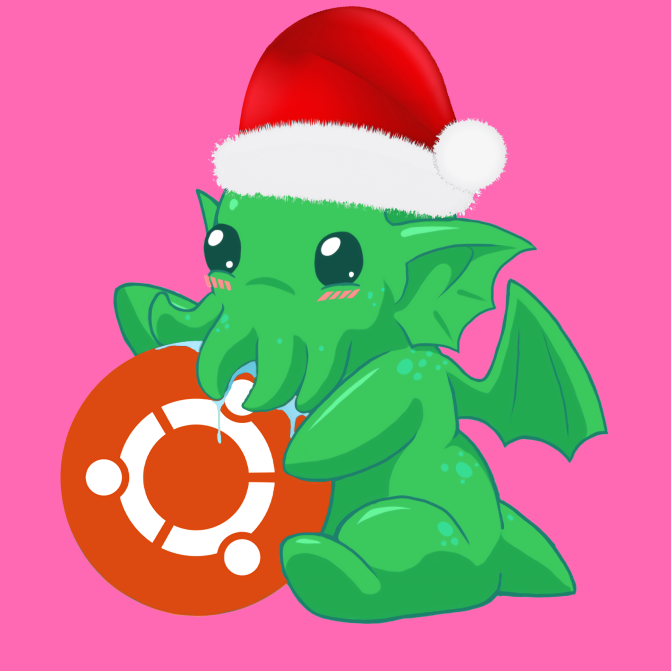
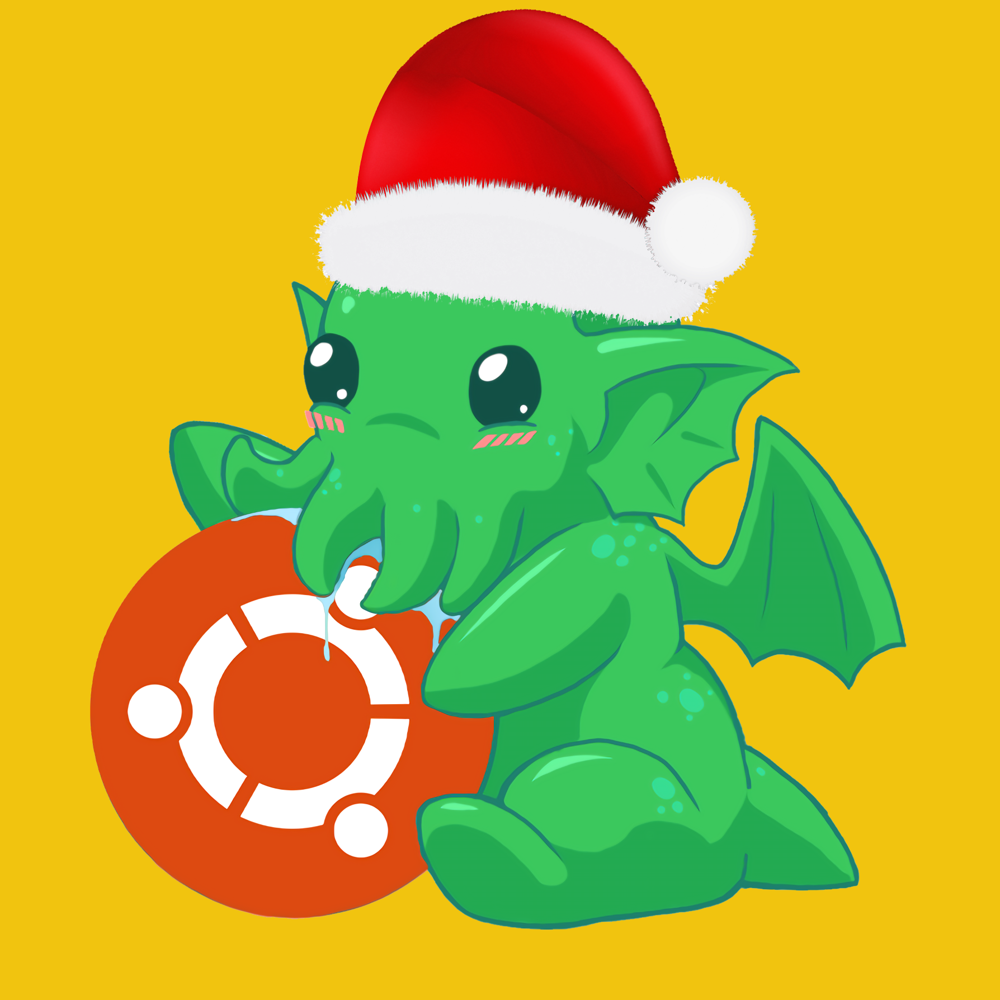
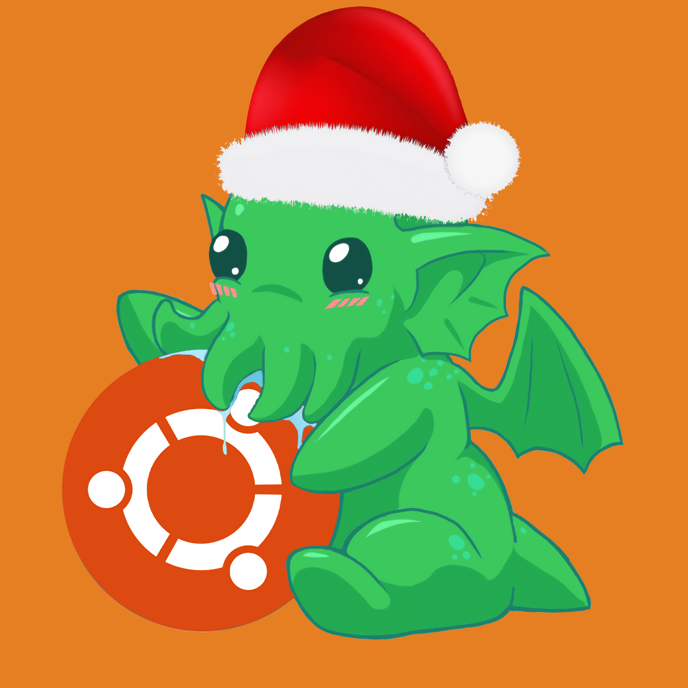
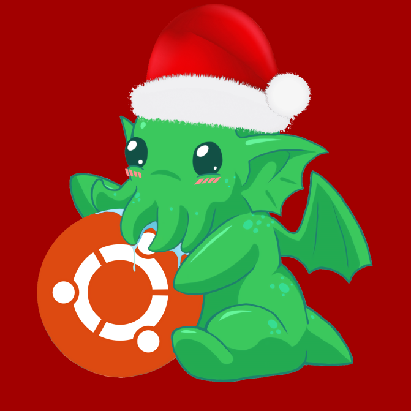

Yann Brun
[Ayant une capacité d'adaptation hors norme, cet homme est capable d'apprendre un langage en 1h, JS rpz.]
[Ayant une capacité d'adaptation hors norme, cet homme est capable d'apprendre un langage en 1h, JS rpz.]
 Nicolas Charlier
[Expert en pixelart et bilingue à temps perdu, cet homme à la cravate n'a pas fini de vous étonner !]
[Expert en pixelart et bilingue à temps perdu, cet homme à la cravate n'a pas fini de vous étonner !]
 Gatien Depeyre
[Beaucoup d'imagination implique beaucoup de surchauffe système, ainsi il n'est pas étonnant de le voir s'endormir pour 10min (en réalité 666h)]
[Beaucoup d'imagination implique beaucoup de surchauffe système, ainsi il n'est pas étonnant de le voir s'endormir pour 10min (en réalité 666h)]
 Rémi Espié
[Les serveurs sont son domaine de prédiléction, le php sa religion (après celle de notre grand dieu CthulhUbuntu). Il est le seul capable de carry l'équipe puisqu'un chef est là pour cheffer.]
[Les serveurs sont son domaine de prédiléction, le php sa religion (après celle de notre grand dieu CthulhUbuntu). Il est le seul capable de carry l'équipe puisqu'un chef est là pour cheffer.]
 Mélanie Fressard
[Bac +12 en gimp, papa Johnny est son modèle ! Son rêve quand elle sera grande (ce qui n'est pas prêt d'arriver) est de devenir un muffin afin de rencontrer son idole.]
[Bac +12 en gimp, papa Johnny est son modèle ! Son rêve quand elle sera grande (ce qui n'est pas prêt d'arriver) est de devenir un muffin afin de rencontrer son idole.]
 Bastien Gavioli
[Pro gamer de Master of Grid, sa capacité à citer la capitale de Liechtenstein en moins de 5s lui permet de prendre l'avantage lors de situations critiques !]
[Pro gamer de Master of Grid, sa capacité à citer la capitale de Liechtenstein en moins de 5s lui permet de prendre l'avantage lors de situations critiques !]
 Alexandre Roussel
[Les burgers n'ont aucun secret pour lui ! Cooking Mama en serait jalouse à en perdre le header !]
[Les burgers n'ont aucun secret pour lui ! Cooking Mama en serait jalouse à en perdre le header !]
 Enzo Viguier
[Ses capacités hors normes de graphiste lui ont permis de produire 6 logos pour 6h ce qui n'est pas 6 facile !]
[Ses capacités hors normes de graphiste lui ont permis de produire 6 logos pour 6h ce qui n'est pas 6 facile !]
Notre merveilleuse équipe est soudée même en distanciel !